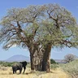

Plant Grimoire

BaobabThe baobab is among the oldest and largest of all trees, its gigantic, contorted shape a curiously cartoon-like silhouette against the sky. It seems an amalgam of animal, vegetable, and mineral, with a distinct personality all its own.
Characteristics
Because of its wrinkled, scored bark, its great size, and its age, the baobab is sometimes likened to the elephant. Its bark is spongy and saturated with water, and its hollow interior is sometimes used as a reservoir; every part of the tree is useful save for that spongy bark.
Folk Tradition
A creation myth from West Africa tells that all the animals were each given their own tree. The hyena, appalled to be given the baobab, at once turned it upside down, which is why its branches look so like roots. Across West Africa and Madagascar the baobab holds an important place in the life of the community. People once buried their dead within its hollow trunk, trusting that so massive and benevolent a tree might protect the soul, and when a baobab dies it is still mourned with a full wake, accorded a sacred status equal to that of a human village elder. When the Kariba dam in Zambia was built in the 1960s, the people had to evacuate the spirits from the baobabs before the trees were drowned, taking branches from them and fixing them to baobabs in unaffected areas.
Sacred Presence
Above all it is as a presence in the landscape that the baobab matters most. Highly visible and venerated for its size and age, the tree becomes a kind of temple and a place of pilgrimage, and in Australia it has been used to mark sacred burial sites.
USDA Hardiness Zone for Adansonia digitata sourced from Kew Plants of the World Online (corresponds to its native semi-arid tropical range across mainland Africa).